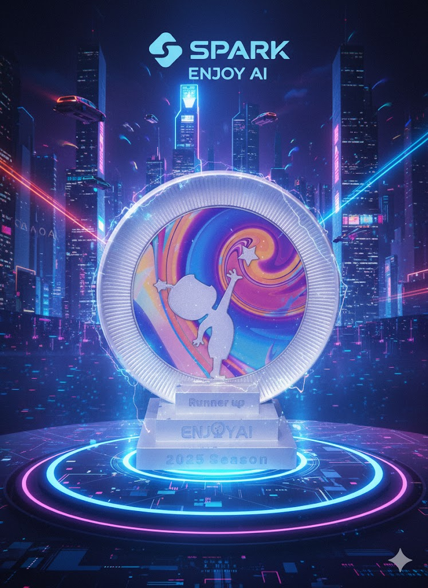
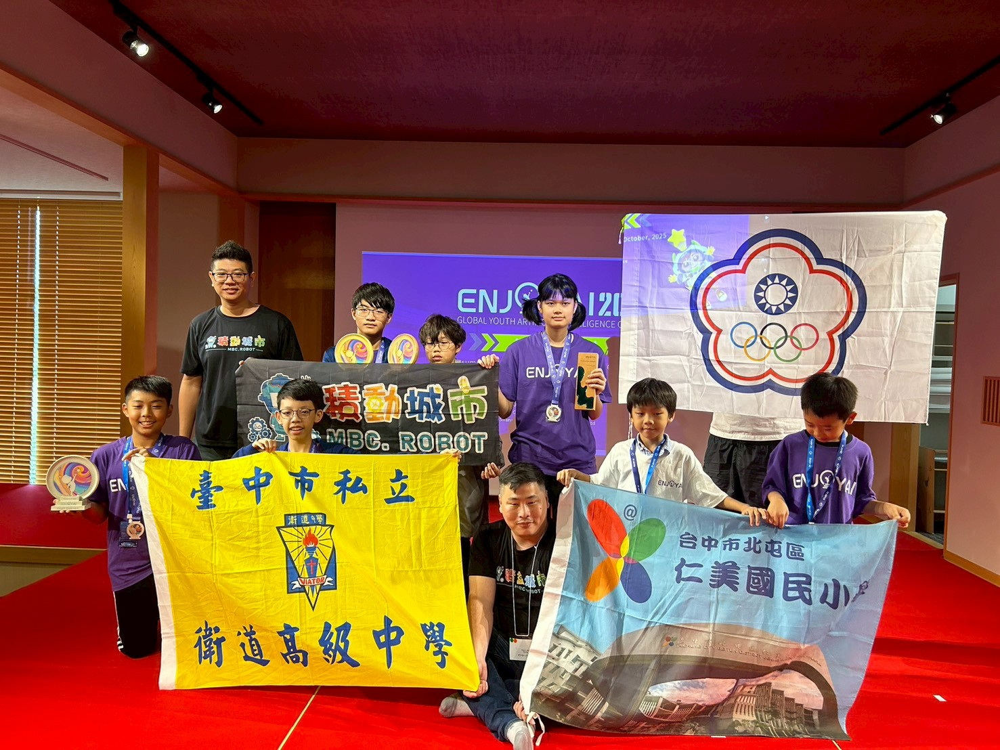

賽事概述
2025 年的 ENJOY AI 大賽以「能源探索家」為主題，挑戰參賽者運用機器人設計與編程，模擬能源勘探、收集與運輸的過程。這場比賽不僅考驗了隊伍的工程實力，更激發了他們對未來能源科技的想像。 來自全國各地的隊伍齊聚一堂，展示了令人驚嘆的創意與技術，共同見證了機器人科技的無限潛力。
2025 榮耀之巔

2025 夏季賽榮譽榜
| 賽事組別 | 獲獎隊伍 / 選手 | 榮譽獎項 |
|---|---|---|
| 《Geometric Forest》 | 「Team Hanergy」 陳○翰、蔡○漢 |
🏆 冠軍 |
| 《Cyber City - Elementary》 | 「Goldfish team」 林○謙 |
🥈 第二名 |
| 《Cyber City - Middle School》 | 「Taiwan Lucky Bicycle」 吳○皓、陳○弘 |
🏆 冠軍 |
| 「TAIWAN MVP」 蕭○紳 |
🥉 第三名 | |
| 《Cyber City - High School》 | 「Reaching the pinnacle」 陳○ |
🎖️ Dedication Award |
精彩瞬間


圖：2025賽季頒獎典禮與精彩比賽畫面。
比賽成果與影響
「能源探索家」賽季的成功，不僅誕生了多支技術卓越的冠軍隊伍，更重要的是，它激勵了無數青少年投身機器人與程式設計的學習。我們看到了隊伍們如何從零開始，透過不斷嘗試與改進，最終完成複雜的任務。這些經驗將成為他們未來探索科學世界的寶貴基石。